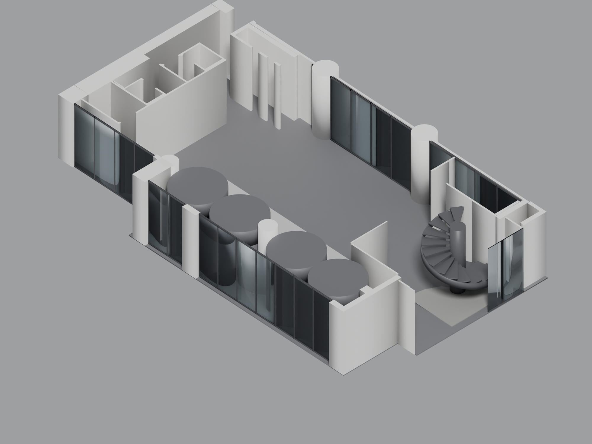
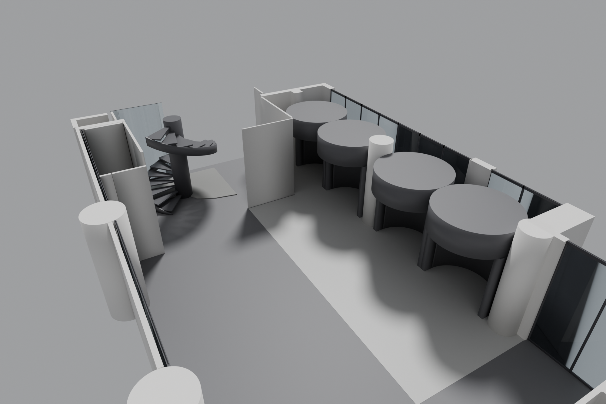
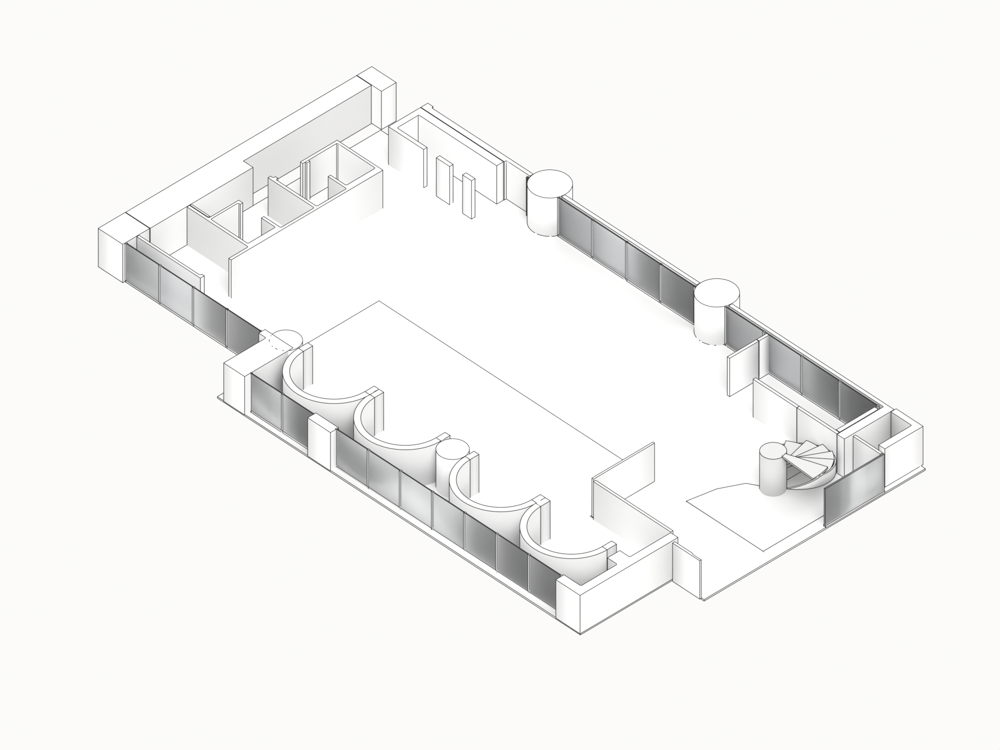
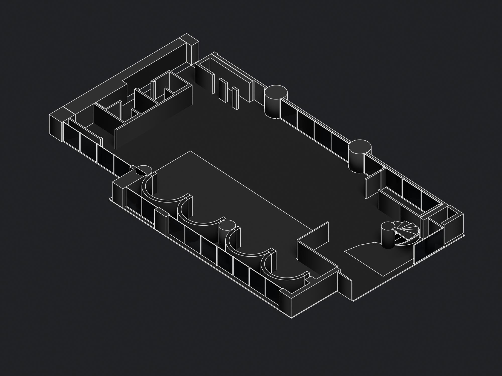
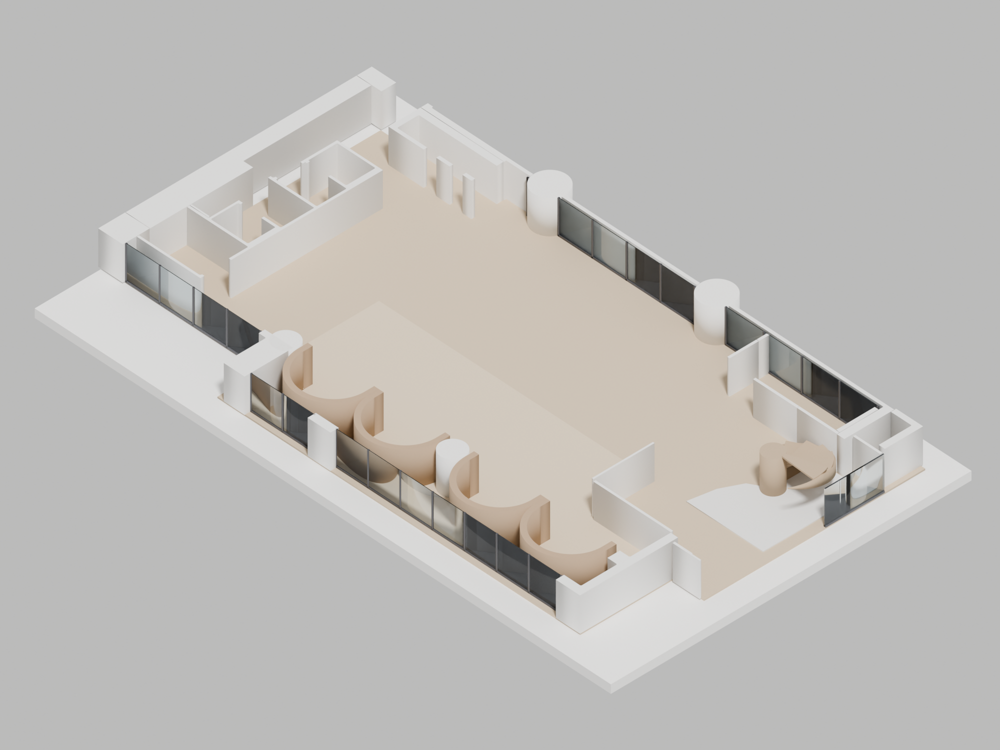
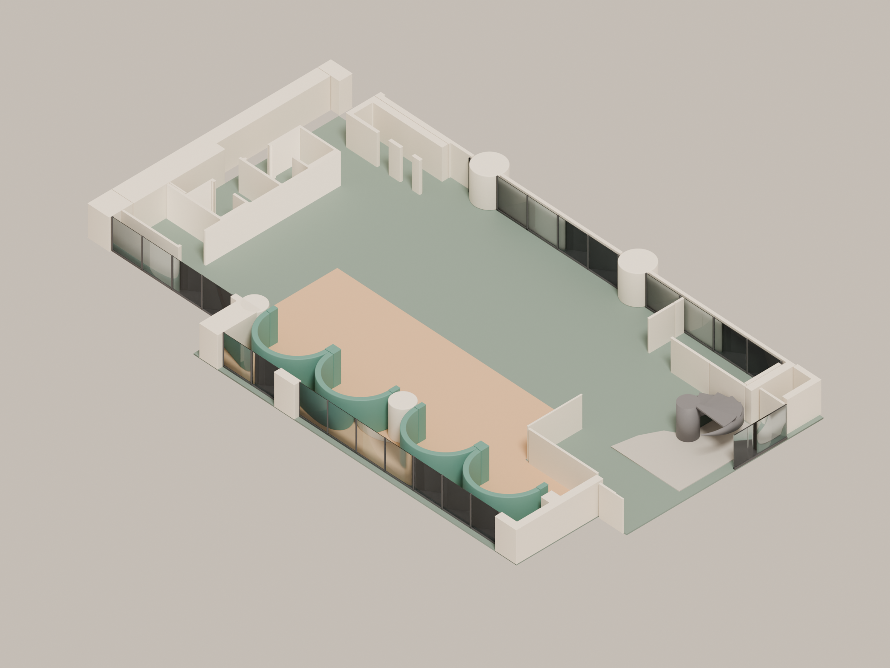

La coque dans Blender
rendus en argile, sans mobilier · tout est refait par le script outils/blender/floor1.py

1 · Le calage, vu de dessus : les murs extrudés tombent sur ceux du plan.

2 · La coque coupée à 1,20 m, sur le plan : la lecture « carte ».

3 · Toute la hauteur du rez-de-chaussée (3,35 m), sans plafond.

4 · Depuis le bar : les quatre tambours, l'escalier et l'entrée.
Quatre styles, essayés sur la coque
la même coque coupée à 1,20 m, sans mobilier : un premier aperçu, à juger avec la planche de la recherche

A · Trait, comme la vidéo : blanc, traits fins, ombres douces.

A′ · Trait sombre : la même carte pour le service, en salle tamisée.

B · Maquette : carton blanc et bois, posée sur son socle.

C · Pièce de jeu : couleurs chaudes, arêtes adoucies, lumière dorée.
Questions
- « Floor1 » : c'est bien le rez-de-chaussée, avec l'entrée, l'accueil et le bar (le fichier floor1.png) ?
- D'où vient le plan (le projet, l'architecte) ? Les photos de la vraie salle donneraient les matières, et il faudra le citer si le projet est montré.
- Le restaurant : on garde ce plan tel quel et on invente un nom, une carte et une équipe fictifs pour les données en direct ?
- Les carrés G (▯▯) : postes de service, consoles ou prises au sol ? Et la zone 10, en haut à droite : une cour, une ruelle ?
- Le style : voir la planche de la recherche. Je propose de prototyper trois styles sur cette coque avant de modéliser le mobilier.